Five centuries of India's fortunes, read from its fields — from the Mughal zabt to the tubewell republic. How the land fed empires, was bled by one, beat famine, and still carries half of India on its back.
In seven parts and twenty-two chapters, with Dietmar Rothermund's An Economic History of India: From Pre-Colonial Times to 1991 as the book in hand — cited wherever it speaks.
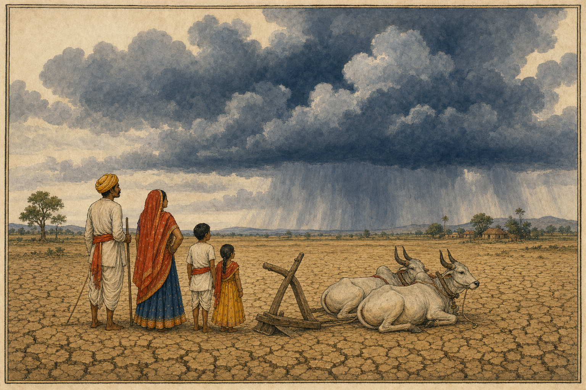
Before the ledger came for the field, India was a monsoon civilisation run on a land tax — rich in aggregate, poor per head, weaving for the whole world. Meet the operating system, and the empire that perfected it.
Monsoon, soil and season: the operating system of Indian agriculture.
Everything in this story happens between June and September. The southwest monsoon delivers roughly 75% of India's annual rain in those four months [IMD], and the whole agricultural year is built around its arrival: kharif crops sown into the rains (rice, cotton, jowar, bajra, groundnut, jute), rabi crops sown into the cool, moist aftermath (wheat, gram, mustard), and a short irrigated zaid window in summer where water allows. Rothermund opens his whole economic history on exactly this note: India depended "almost exclusively on rain-fed agriculture," the monsoon playing its "fateful role" throughout Rothermund · preface.
The scale of the stage is extraordinary. India today sows 140.7 million hectares — about 43% of its entire land surface — a share of country given to the plough that almost nowhere else on earth matches [LUS 2022-23]. Because many fields carry two crops a year, the gross cropped area is 219.4 million hectares: a cropping intensity of 155.9%, up from 111.1% in 1950-51 — the average Indian field now works about one and a half shifts. Irrigation now reaches 56.4% of the sown area (it was 17.6% at Independence), which still leaves ~44% of Indian farmland watching the sky, exactly as its ancestors did.
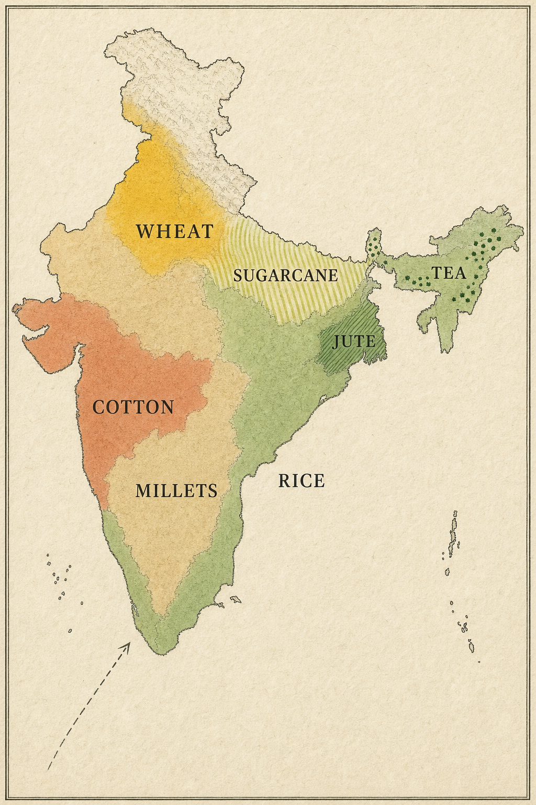
The other master fact is the size of the holdings. India farms in miniature: 146.45 million operational holdings, averaging just 1.08 hectares; 86% of them are officially "small or marginal" (under 2 ha), and together those small farms work about 47% of the land [Agriculture Census 2015-16]. Hold that number against any tractor brochure or policy speech in the chapters ahead. And yet this miniature farm sector puts India at #1 in the world in milk, pulses, jute and spices, #2 in rice, wheat, sugarcane, cotton, and fruits and vegetables [FAO].
Zabt, jagirdars, the silver stream — and a quarter of the world's output.
Around 1580, Akbar's finance minister Raja Todar Mal completed one of the most ambitious administrative feats of the early modern world: the zabt settlement. Fields were physically measured with a standard rod, classified by how continuously they were cultivated, and assessed at fixed cash rates per crop, computed from ten-year averages of yields and prices. The stated demand was one-third of average produce; the effective claim of the whole ruling apparatus approached one-half in many regions [Habib; Moosvi]. What Britain would later do with surveys and settlement reports, the Mughals did first, with knotted ropes and Persian registers.
But note what this state did not create: property. "Landlords were not landowners; they only had the right or privilege to collect taxes from the peasants" Rothermund · ch. 1.1. The empire's officers — mansabdars, ranked by decimal grades — were mostly paid through jagirs, temporary and transferable assignments of a district's revenue, rotated every few years. A jagirdar who improved his district was improving someone else's next posting, so no one improved anything; the only real check on extraction was the peasant's oldest weapon, flight Rothermund · ch. 1.1.
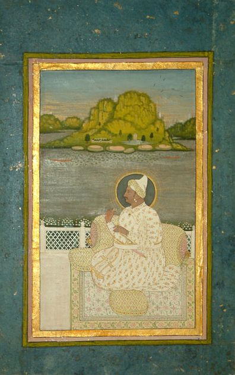
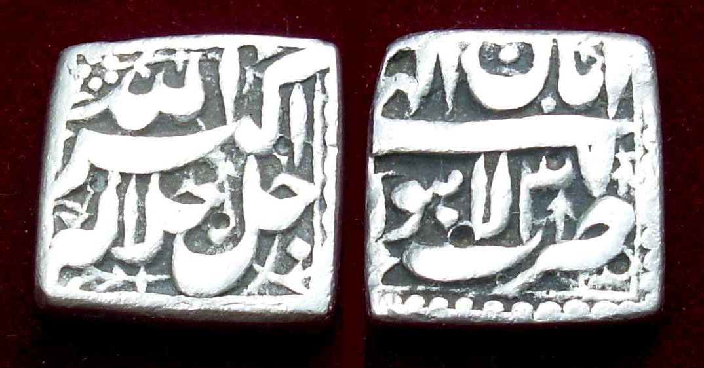
The machine ran on imported money. India mined almost no silver, yet collected its land tax in silver coin — possible only because the world paid silver for Indian goods. Roughly 80% of Mughal India's imports were precious metals; the French traveller Bernier called India the sink where the world's gold and silver were "swallowed up" [research: Bernier via Habib]. Silver-coin circulation trebled between 1591 and 1639, and prices doubled over 1595–1637 Rothermund · ch. 1.3. The mint itself practised planned obsolescence: a rupee held full value only in its mint year and depreciated after, forcing constant re-minting and circulation Rothermund · ch. 1.3. And what drew the silver in was cloth: India held about 25% of world manufacturing output in 1750 [Bairoch], with Dhaka muslin at 800–1,200 threads per square inch — "woven air" — and Bengal alone supplying some 40% of everything the Dutch shipped out of Asia. The emperors called Bengal the "paradise of nations."
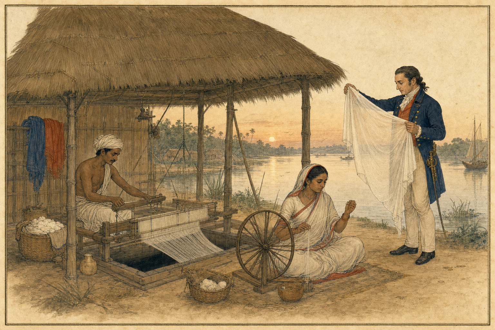
Add it up and you get the number every Indian knows: around 1700 the Mughal realm produced roughly 24% of world GDP [Maddison]. But read it with both eyes open. The share was population-driven — perhaps 150 million people in 1600, 200 million by 1800 — while income per head sat near subsistence (about $550 in 1990 dollars against Britain's $1,250) and was already sliding by 1600 [Broadberry-Gupta]. Yields per acre around 1595 were roughly what they would still be in the late nineteenth century — three centuries of per-acre stagnation begin here [Moosvi]. And the machine carried the seed of its own destruction: a state whose one great tax was land revenue — "a sluggish and regressive tax" — could not ride the inflation its own silver imports created Rothermund · ch. 1.4. Grain "rarely ever reached the next regional market, even when there was a famine" Rothermund · ch. 1.2: plenty and starvation could sit a district apart. Remember that sentence; the railways will invert it, with consequences no one intended.
A joint-stock company of accountants defeats military feudalism, wins the right to tax Bengal, and reorganises a civilisation's land, looms and crops around one purpose: remittance. The ledger's first conquest of the field.
Plunder, organised: a trading firm becomes the taxman of Bengal.
Bengal became the prize by an accident of British protectionism. England's calico embargo let only plain white cloth in — and fine white cottons were Bengal's specialty, so Bengal's trade rose from about £200,000 a year before 1725 to about £500,000 by 1740 while other provinces shrank Rothermund · ch. 2.4. At Plassey on 23 June 1757, Clive bought the Nawab's commander-in-chief before the battle began — "the traitor was made Nawab, for which he was beholden to Clive" Rothermund · ch. 2.4. Buxar (1764) beat the Mughal emperor, Awadh and Mir Qasim together, and on 12 August 1765 Shah Alam II signed away the diwani — the revenue collection and civil justice of Bengal, Bihar and Orissa — to the East India Company for Rs 26 lakh a year.
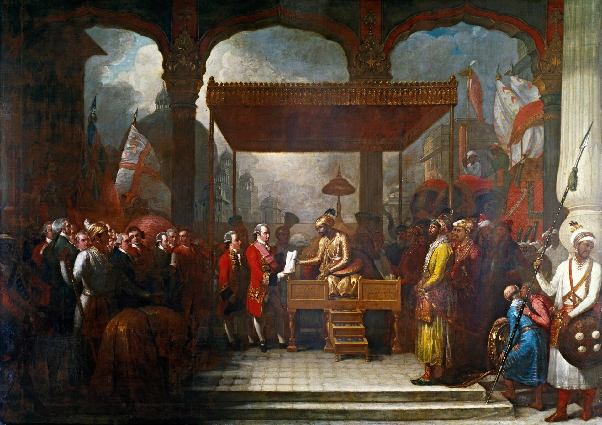
How does a company of clerks defeat military feudalism? Not with better weapons — Indian rulers often had the same guns. The Company's edge was organisational: drilled, regularly paid infantry that "could mow down the Indian cavalry by shooting with machine-like precision," backed by shipping credit, accounting, files and what Rothermund calls corporate memory Rothermund · ch. 2.5. Warren Hastings arrived in India as an eighteen-year-old writer and was Governor of Bengal at thirty-nine. "The methods of the counting house and the tough discipline of the drill sergeant thus proved superior to Indian valour" Rothermund · ch. 2.5.
What changed in 1765 was the direction of the silver. For a century, Europe had shipped bullion to Bengal to buy its cloth. Now the Company bought its "Investment" — the export cargoes of textiles, saltpetre and silk — out of Bengal's own land revenue. The silver that trade had pumped in, taxation now pumped out; it was, in the book's phrase, "extracted again" Rothermund · ch. 2.4. The Company "did nothing to stimulate the economy and simply collected tribute as its military feudal predecessors had done" — with one difference that defines the next ninety years: its predecessors spent the tribute in India Rothermund · ch. 2.5. Even London's politics conspired: Bengal's revenue stayed in private hands partly because, flowing to the Crown, it would have freed George III from Parliament's financial leash Rothermund · ch. 2.4.
Then the rains failed. The famine of 1770 — Bengali year 1176, the Chhiattorer Monnontor — killed, by Warren Hastings' own 1772 report, a third of Bengal's people; that report is the source of the traditional figure of ten million dead, which modern scholarship revises to perhaps one to two million [Hunter; Datta — toll contested]. What is not contested is the conduct of the new taxman: relief was negligible, revenue was — in the Company's own words — "violently kept up to its former standard," collections in 1771 exceeded those of 1768, and the assessment was raised about 10% for the following year. The pattern generalised: Orissa, which had yielded the extractive Marathas 400,000 rupees a year, yielded the Company 750,000 Rothermund · ch. 3.1.
Permanent, ryotwari, mahalwari: three ways to turn harvest into rent.
On 22 March 1793, Governor-General Cornwallis signed the Permanent Settlement of Bengal, Bihar and Orissa — the boldest fiscal wager of the age. The zamindars, till then hereditary tax collectors, were made private proprietors of the land; the state's demand was fixed forever at about sicca Rs 2.68 crore [research 03]; and of what a zamindar collected from the peasants — now legally redefined as his "tenants" — he kept roughly a tenth Rothermund · ch. 3.1. Enforcement was a sundial: the "sunset law" sent any estate whose payment had not arrived by sunset on the due date to public auction, with no appeal to the civil courts. Within about two decades, estates covering a third to half of Bengal's revenue had changed hands; Calcutta merchants and bankers became absentee landlords, and layers of sub-tenures piled up between the owner in the city and the tiller in the mud.
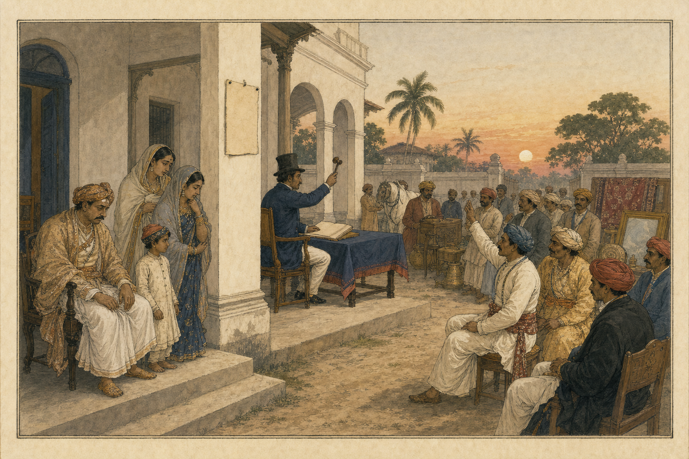
Madras and Bombay went the other way. Under ryotwari — built by Read and Thomas Munro from the 1790s — the state settled directly with each cultivating ryot, field by surveyed field, with reassessment every thirty years. No zamindar stood between peasant and state; the state simply became the landlord itself, and its early demands ran up to half the gross produce before Munro pushed them toward a third. The Madras Torture Commission of 1855 documented what collection at such rates involved. The third model, mahalwari (from 1822 in the North-Western Provinces, later Punjab), settled with the village body jointly — at an initial demand of over 80% of the village's net rental, cut to two-thirds in 1833 and half in 1855 because nothing higher could actually be paid.
Three systems, one revolution. Every earlier Indian regime had treated land revenue as a share that breathed with the harvest — bad year, smaller take. The British made it a contractual rent, owed in cash, on schedule, regardless. In the theory of freedom of contract, an overtaxed peasant could always relinquish his land; "in practice he had nowhere to go" Rothermund · ch. 3.1. When the demand could not be met, the land itself was sold — to the only men with cash, the moneylenders — a mechanism whose harvest of rage would come due in 1857 in exactly the mahalwari provinces, and whose deeper logic Rothermund compresses into one sentence: "The parasitical company could live on its paralysed host for some time, but there were no prospects of economic growth" Rothermund · ch. 3.1.
Home Charges, deindustrialisation, and the coerced crops: opium and indigo.
The mechanism deserves to be understood precisely, because everything else follows from it. India ran persistent export surpluses — and got nothing back for them. Its own tax revenue purchased the export cargoes; the sale proceeds stayed in Britain — institutionalised after 1858 as the Home Charges (India Office salaries, pensions, military charges, guaranteed railway interest, debt service), settled through the Secretary of State's Council Bills. The Company remitted even when trade was unprofitable, because remittance was the point: "export-led immiserisation rather than export-led growth" Rothermund · ch. 3.2. Dadabhai Naoroji, who named this the Drain, put it at £30–40 million a year by 1900 [Naoroji]; modern estimates of its size range enormously — from about 1–2% of national income a year in most careful reconstructions to Utsa Patnaik's compounded $45 trillion, sharply contested — but even the low bound, sustained for 180 years against India's tiny investible surplus, is the difference between an economy that could accumulate and one that could not [Naoroji; Patnaik vs Roy — live debate].
Meanwhile the loom fell silent. India's share of world manufacturing collapsed from ~24.5% in 1750 to ~2% by 1900 [Bairoch]; cotton piece goods fell from a third of India's exports in 1811-12 to 3% by mid-century; Dhaka, city of woven air, shrank from perhaps 150,000 people to 30–40,000 by 1840. Rothermund adds an honest regional nuance: total ruin came to Bengal's export-dependent weavers — "the bones of Bengali weavers did indeed bleach in the plains of India, as Lord Bentinck remarked" Rothermund · ch. 3.1 (a line that reaches us via an 1834-35 report quoted by Marx, and is conventionally rather than securely attributed) — while interior weavers hung on for decades on cheap food and cheap yarn, protected, wonderfully, by India's "vigorous washermen": hand-loomed cloth survived a beating on the riverbank stones that shredded Lancashire's Rothermund · ch. 3.1.
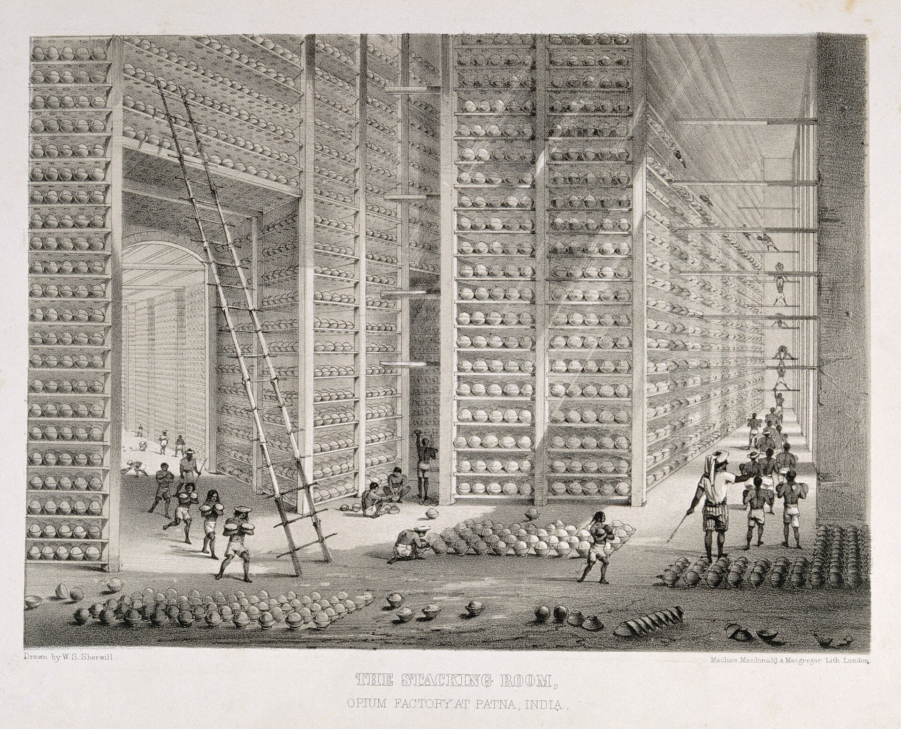
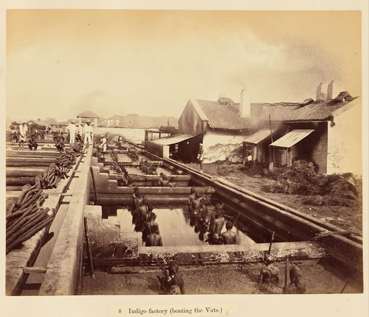
The era's two great export crops were grown under compulsion dressed as contract. Opium: a Bengal government monopoly from 1773 — licensed peasant cultivation on advances, processing at Patna and Ghazipur, chests auctioned at Calcutta and run to China to pay for Britain's tea; it supplied ~14–15% of government revenue across the nineteenth century [research 03], and the Company burnt surplus stock to hold the price Rothermund · ch. 3.2. Indigo: planters' cash advances (dadan) plus hired lathials and fraudulent books forced Bengal ryots to sow indigo at below-cost prices, with contract-breaking made an imprisonable offence. In 1859-60 the ryots of Nadia answered with the Nil Bidroho — the Indigo Revolt — a disciplined mass refusal to sow; the Indigo Commission of 1860 heard a magistrate testify that "not a chest of indigo reached England without being stained with human blood," and ruled that ryots could not be compelled. It was the first great peasant victory of the colonial era — won not with violence but with a strike.
The Crown takes over and builds — railways, canals, telegraphs — with Indian money on British terms. India is wired into the world market just as the world market turns dangerous: the age of iron is also the age of hunger.
Railways at public risk, canals that made deserts bloom — for some.
On 16 April 1853, three locomotives named Sahib, Sindh and Sultan pulled the first train 34 km from Bombay to Thane. By 1901 India had the world's fourth-largest railway network; by 1947, 65,217 route-kilometres. The finance was the famous guarantee system: private British companies received free land and a guaranteed 5% return on capital, paid — whenever traffic fell short — from Indian revenues. Construction costs ran to roughly double the estimates; the guarantee payouts from Indian taxpayers reached some £50 million by 1900. Rothermund's arithmetic for 1869: 4,225 miles built, 890 million rupees invested, 44 million rupees a year owed in interest — "the Indian taxpayer had to foot the bill for this debt service and he was not asked what he thought about it" Rothermund · ch. 4.2.
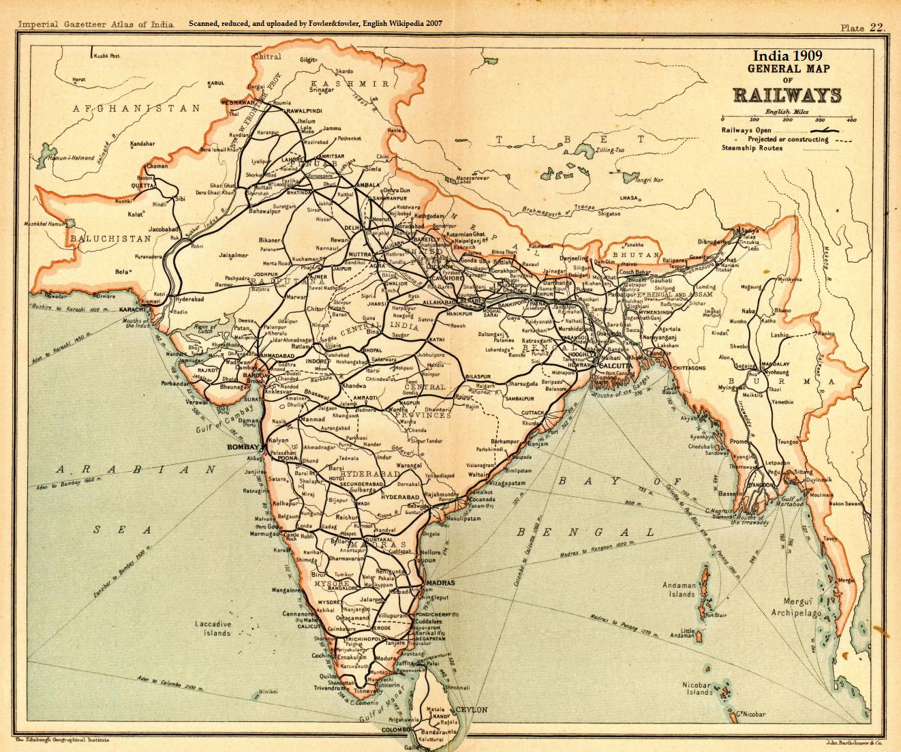
What did the rails do? Almost no industrial linkage — rails, engines, wagons, even coal came from Britain; between 1865 and 1941 India built only ~700 locomotives while Britain shipped it ~12,000 Rothermund · ch. 4.2. But they revolutionised grain. Where the railway arrived, grain prices rose ~50% and their wild swings halved; price gaps between districts fell ~60% over 1861–1920 [Hurd]; the best modern estimate says railway access raised a district's real agricultural income by about 16% [Donaldson, AER 2018]. Hold this against the next chapter: the same rails that attenuated famine when relief moved in, carried record wheat exports out in 1877-78 while the Deccan starved. Both facts are true; the freight-rate table decided which one you experienced. Between 1880 and 1900 freight rates fell by a third, grain exports tripled to ten million tons a year — and the village grain reserve, the old insurance against drought, was priced out of existence Rothermund · ch. 4.2.
Water followed a different geography. The Ganges Canal (Proby Cautley, opened 1854) was at its opening the largest man-made waterway on earth — 348 miles of main channel, whose engineering school at Roorkee became India's first engineering college. Arthur Cotton's anicuts on the Godavari and Krishna made the southern deltas the "granary of the south" — coastal Andhra garlands his statues to this day. And from 1885, the Punjab canal colonies: nine planned colonies on the doabs of the five rivers, canal-irrigated Punjab rising from ~3 million to ~14 million acres by 1947, settler villages laid out on surveyed grids of 25–27.5-acre murabbas — the greatest of them, the Chenab Colony, centred on the new town of Lyallpur — then the largest irrigation enterprise on earth [Imran Ali]. But the empire's water went where revenue was safest, not where famine lived: by 1938-39 only ~22% of India's cropped area was irrigated, and the dry Deccan — the classic famine tract — got almost nothing.
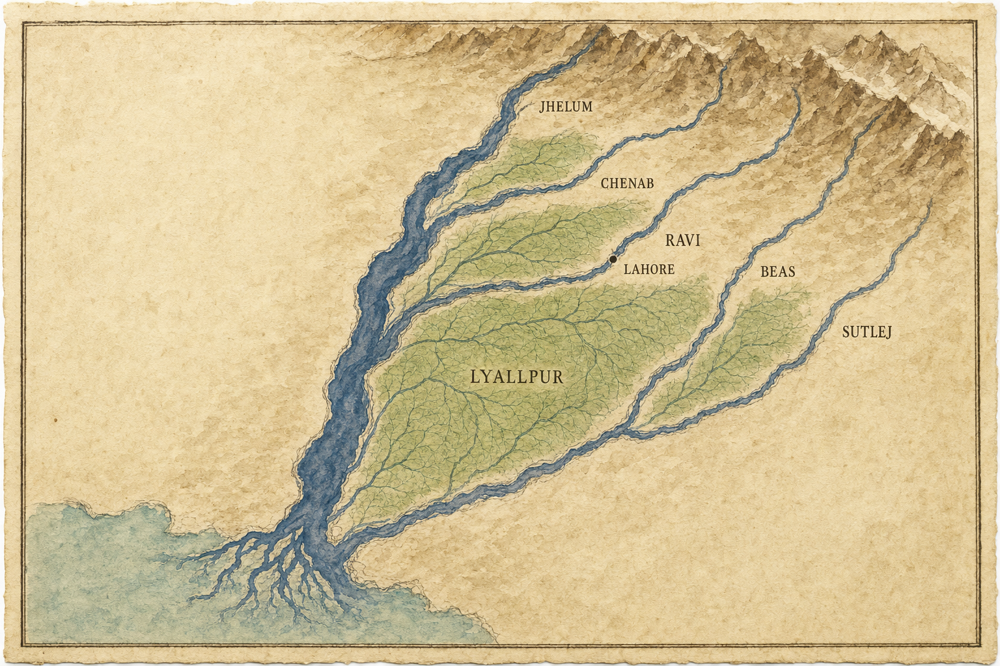
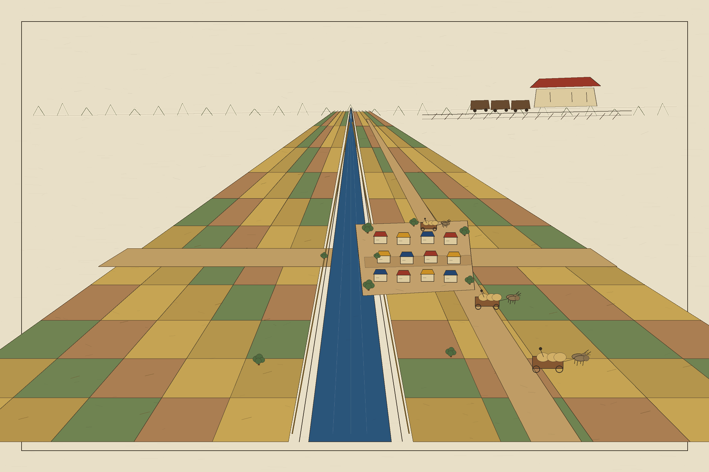
1866–1900: drought, dogma, and the arithmetic of relief.
The tolls first, plainly. Orissa, 1866: about a million dead — one in three inhabitants of the province. The Great Famine of 1876-78, centred on Madras and the Deccan: 5.5 to 8.2 million excess deaths by the careful modern estimates [Maharatna; Davis]. The twin famines of 1896-97 and 1899-1900: several million more — The Lancet's contemporary reckoning for the 1890s ran to 19 million, high but the right order for the decade [research 05]. These are the numbers under every later argument about empire.
Policy made drought lethal. During 1876-78 Viceroy Lytton, under Treasury pressure, held that grain must be left "to the free action of trade": merchants shipped a record ~320,000 tons of wheat to Britain in 1877-78 while the Deccan's people walked to relief camps [Davis]. At those camps, from January 1877, the famous Temple wage paid heavy labour about 1,627 calories a day — a ration the historian Mike Davis pointedly juxtaposed with the 1,750 calories of the Buchenwald camp ration of 1944 (the comparison is Davis's own, made in 2001; the condemnation, though, is contemporary — Madras's sanitary commissioner W.R. Cornish attacked the wage as below subsistence at the time) [Davis; Cornish]. Relief works were deliberately sited far from villages — the "distance test" — to discourage the starving from applying.
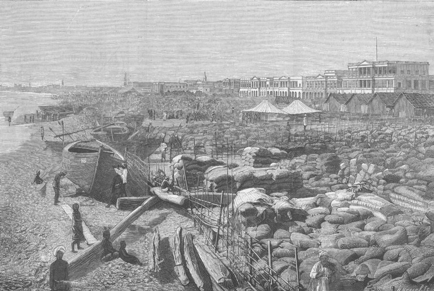
Why did famines cluster now, under the most technologically capable state India had ever had? Rothermund's mechanism is the vanished buffer: indebted peasants surrendered whole harvests to the moneylender-grain-dealer at harvest and bought food back on credit through the year — so when prices spiked, there was no village stock and no purchasing power, and the end-of-century famines "decimated the Indian population" Rothermund · ch. 4.2. Mike Davis's harder verdict — "mass murder by market" — weights the same facts toward ideology: telegraph-integrated prices, cash revenue due regardless of harvest, laissez-faire relief. Later scholars weight the drought itself and thin state capacity more heavily. The disagreement is about blame's distribution, not about the dead [Davis vs Roy — historiography].
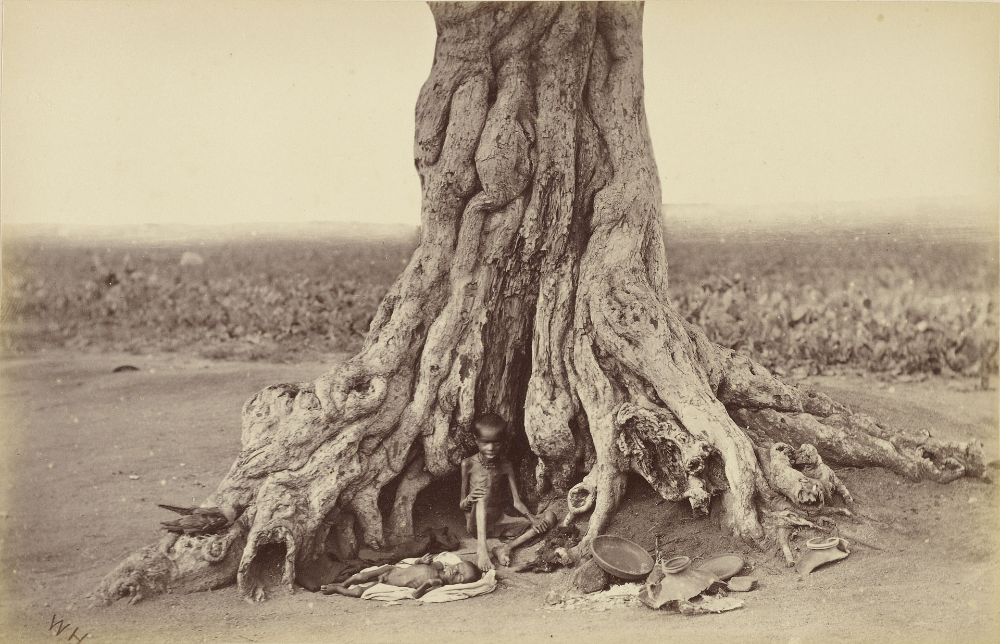
Out of the catastrophe came the machinery. The Famine Commission of 1880 produced the provincial Famine Codes from 1883: rainfall and price triggers, graded relief works, gratuitous relief for those who could not work, revenue suspensions. The Codes worked when invoked — mortality in 1907-08 was a fraction of 1899-1900's — and failed when overridden by viceregal economy drives, as under Elgin and Curzon in the late 1890s. File the Codes' greatest failure for Chapter 12: in Bengal in 1943, famine was simply never declared, so the Code never switched on. And file the deepest lesson for the end of the book: the famines stopped, permanently, in 1947 — the strongest single piece of evidence in this whole story that famine is a political event, not a meteorological one.
Commercialisation, the moneylender's ledger, and Blyn's terrible statistic.
When the American Civil War strangled Britain's cotton supply in 1861, the Deccan boomed: by 1862 roughly 90% of Britain's raw-cotton imports were Indian, export values jumped from ~Rs 16 crore to ~Rs 40 crore, Deccan cotton prices quadrupled, and Berar and Khandesh converted wholesale to the white fibre [Beckert; Satya]. Then Appomattox. Prices crashed — but the debts contracted at boom prices remained payable in full, at interest. That arithmetic, repeated across lakhs of ledgers, is the machinery of this chapter.
The village's bank was the sowcar — moneylender and grain-dealer in one. Routine rates ran 18–38% a year on cash and 25–50% a season on grain; Malcolm Darling's Punjab verdict became proverbial: the peasant is "born in debt, lives in debt, dies in debt" [Darling]. By 1929 British India's rural debt stood near Rs 900 crore [CBEC 1931]. The lender was not an aberration of the system but its partner: he paid the peasant's revenue on time to protect his own security, so the revenue authorities protected him Rothermund · ch. 4.4. And the courts completed the trap: British judges enforced bonds literally, abandoning the old customary shields like damdupat — the rule that interest may never exceed principal.
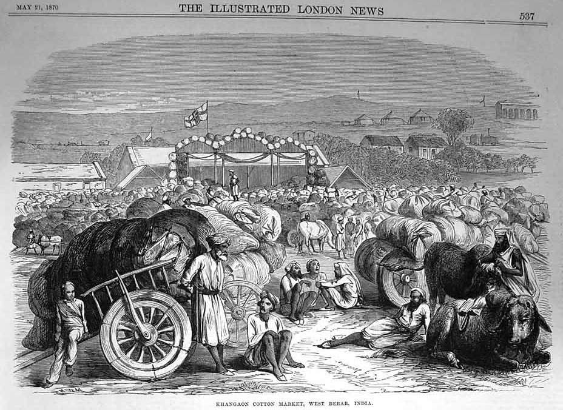
Once — memorably — the village answered. In May 1875, at Supa in Poona district, and then in thirty-plus villages across the Deccan, peasants rose not against persons but against paper: bonds, mortgage deeds and court decrees were seized and burnt in bonfires; moneylenders who surrendered their documents were left unharmed [Deccan Riots Commission 1878]. The state heard the message with unusual clarity: the Deccan Agriculturists' Relief Act (1879) let courts "go behind the bond" and scale down unconscionable interest, and the Punjab Land Alienation Act (1900) barred land transfers to "non-agriculturist castes" — which promptly contracted credit and handed the business to rich-peasant lenders, often on harsher terms Rothermund · ch. 4.4.
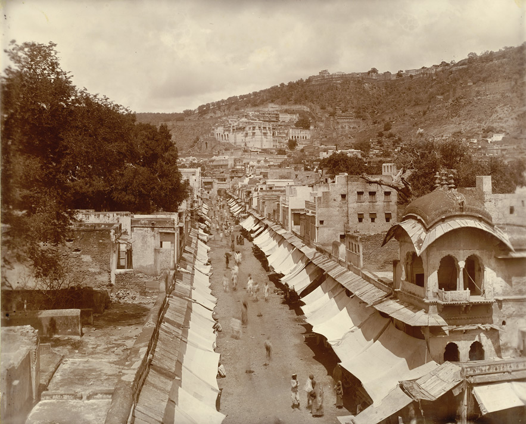
And beneath the drama, the fields kept the century's true account. George Blyn's reconstruction — the most important statistic of late-colonial agriculture — found that between 1891 and 1947 foodgrain output grew 0.11% a year while non-food cash crops grew 1.31%; from 1911 population outran food, so foodgrain output per person fell about 29% over 1911-47 — 38% in Greater Bengal — with availability dropping from ~199 kg to ~137 kg a head [Blyn]. Rothermund pairs it with the paradox that explains so much of what follows: "the growth of an Indian market was accompanied by declining yields per acre" — while land prices boomed anyway, because assured rents made land the one asset that always paid Rothermund · ch. 4.5.
Currency politics, the limits of industrialisation, and capital stuck to land.
From 1835 the silver rupee was sole legal tender, its mints open to anyone with metal. Then the world moved to gold and American silver strikes sank the metal's price: the rupee slid from 22 pence in 1874 to 13 pence in 1894 — a windfall for exporters, a noose for the government, whose Home Charges were owed in gold. Those charges rose from £10 million a year in 1870 to £25 million by 1900 Rothermund · ch. 4.2; by the early 1890s they exceeded land revenue and customs combined, and "the bankruptcy of the British Indian government was imminent" Rothermund · ch. 4.4. The answer, in 1893, was to close the mints: from then on rupees were coined only at the Secretary of State's behest — the rupee became a managed token currency, managed from London, for London Rothermund · ch. 4.4.
Rothermund's summary of India's strange position at the bottom of the world system deserves quoting whole: "India had set the world silver price as well as the world wheat price, the one by absorbing silver, the other by exporting wheat at the cheapest rate" Rothermund · ch. 4.4. Through 1868-87, 18% of everything India imported was silver and gold — the subcontinent propping the world silver price while its own peasants' wheat set the world's floor price for bread.
Industry did rise — as an enclave. India's cotton mills grew from 2 million spindles (1883) to 6.8 million (1913) — nearly half of them Bombay's; Calcutta's jute mills held a world monopoly on gunny. But the two industries, Rothermund observes, "might as well have existed on different continents": no capital or labour flowed between them, no shared machine-building emerged — each imported its machinery separately from Britain Rothermund · ch. 5.3. There was no protective tariff (fiscal duties were neutralised by countervailing excises on Indian mills), no investment banking; savings went — in the book's most quoted line — "on his wife's neck in the shape of a golden necklace," while Matsukata's Japan was channelling twelve million postal depositors into industrial banks Rothermund · ch. 5.1, 5.4.
The chapter's real subject is where the capital went instead. Land prices rose about 4% a year from 1860 to 1913 against 1.5% for everything else; land was a quarter of national wealth in 1860 and half of it by 1913 — appreciation utterly unrelated to any gain in what the land produced. The 1913 balance sheet reads like a diagnosis: agricultural land valued at 40 billion rupees; rural debt 5 billion; total industrial investment 0.3 billion Rothermund · ch. 5.4. When Indian capital did move — as when Tata raised 23 million rupees in three weeks in 1907 from 8,000 Indian shareholders, fifteen Maharajas among them, to build a steel plant the railway chief had promised to eat rails over — it moved against the whole grain of the system.
| Asset | Value (1913) |
|---|---|
| Agricultural land | Rs 40 billion |
| Rural debt outstanding | Rs 5 billion |
| Total industrial investment | Rs 0.3 billion |
Two world wars, a pandemic, and the Great Depression hit the colonial economy in succession — enriching its industrialists, breaking its peasants, and killing millions. Out of the wreckage come the plans, the rationing machinery, and the border that will define independent India.
WWI: 60% profits upstairs, a 30% harvest crash downstairs — then the Great Divide.
For the men who owned mills, the Great War was the best business of their lives. With imports throttled, net industrial profits — after depreciation and commissions — ran about 60% a year at the peak Rothermund · ch. 6.1. Cotton mills got protection no tariff board would ever have dared: cloth imports fell from 2.1 to 1.4 billion yards while Indian output rose from 0.6 to 1.3 billion. Tata's steel works, whose rails a British railway chief had once promised to eat, sold Britain 1,500 miles of them for Mesopotamia; output went from 31,000 to 181,000 tons, and "if it had not been for the war, the Indian steel industry would never have reached its take-off stage at all" Rothermund · ch. 6.2.
Downstairs, the same war was a tax. Expansion came from labour, not machines — spindle counts actually fell while millhands worked extra shifts — and "wartime inflation operated as a regressive tax, which hit the poor more than the rich" Rothermund · ch. 6.1. Per-capita cloth availability dropped from 13 yards a year to 10: the war, measured in the shirt not bought. Currency in circulation doubled; distrusting paper, India in one year "managed to absorb twice the amount of the total annual world production of silver" to strike coins Rothermund · ch. 6.4. And agriculture — the war's non-participant — took the worst blow: the 1918 drought cut grain output about 30%, from a 56-million-ton average to 39, while cotton and jute acreage held steady, "because the best land was set aside for them" Rothermund · ch. 6.3. Jowar — the poor man's grain — went from price index 91 to 211.
Into that weakened, hungry country came the influenza of 1918-19. The census actuary reckoned 12-13 million dead; modern estimates run to 17-20 million — the largest single-country toll of the global pandemic, compounded by drought [Census; research 17]. The 1921 census consequently recorded the only decadal population decline in Indian history (−0.3%), and demographers named it the Great Divide: after 1921, mortality began its long fall and growth never looked back. Meanwhile agriculture's terms of trade collapsed from 153 to 124, undoing forty years of gains; per-capita income flatlined at ~158 rupees; industry, for all its boom, was still just 3% of net domestic product Rothermund · ch. 6.5. "The main impact of the war was thus a revolution of rising expectations. Most of these expectations were disappointed in the inter-war period" Rothermund · ch. 6.1.
Price collapse, frozen debts, distress gold, and the ratio that would not move.
The trap was set before the crash. In 1926 the Hilton Young Commission fixed the rupee at 1 shilling 6 pence; the dissenting Indian member, Purushottamdas Thakurdas, argued the overvalued ratio silently raised every indebted peasant's real burden by 12% — and warned it would be worse if prices fell. "Prophetic words" Rothermund · ch. 7.1. The 1920s then inflated a "superstructure" of rural debt and land values on top of stagnant production. When world prices broke in 1929-30, the credit chain that ran from the port banks through the wholesale arhatiyas to the village moneylender went, in Rothermund's phrase, into reverse gear: the lender refused his debtor's grain and demanded cash principal — "normally the last thing he would have done" Rothermund · ch. 8.1.
Agrarian prices roughly halved between 1929 and 1933, while the three fixed claims on the peasant — revenue, rent, debt service — stayed at 1920s levels. Deflation became expropriation. And then came this story's most haunting export. When Britain left gold in September 1931, gold's rupee price jumped 20% — "a signal for all moneylenders to force their debtors to surrender their gold ornaments." Some 3.4 billion rupees of gold left India between 1930 and 1938 — wedding bangles and nose-rings sold at scrap value, "all the delicate work was lost as they entered the melting pot." The outflow rebuilt London's creditworthiness; an Indian reflation was forbidden — when the Viceroy's council tried to float the rupee in 1931, the Secretary of State called the idea "desertion in front of the enemy" Rothermund · ch. 8.2. Even the Reserve Bank of India was founded (1934) partly so that the currency would be, in the book's words, "in safe (British) hands" before any Indian finance member could reach it.
The fiscal state squeezed harder as it shrank: the salt tax rose 52% in three years — "a burden for the dumb millions" — while income tax was spared Rothermund · ch. 8.2. The politics followed the prices. Bardoli's peasants had already beaten an arbitrary 29% revenue enhancement down to 6% under Vallabhbhai Patel in 1928; when Gandhi marched to the sea in March 1930, the wheat-belt peasantry flooded in behind him, and Viceroy Irwin privately credited the 1931 pact with forestalling "a general peasant uprising." In 1937, given provincial ballots, the countryside voted Congress. Two quieter counter-currents complete the picture: behind new tariff walls, import substitution ran fast (cloth output up 80%, sugar self-sufficiency by 1936); and the unindebted rich peasant bought cheap land, oil presses, rice mills and buses through the slump — the seed, Rothermund notes, of a rural bourgeoisie "of seminal importance for rural economic growth" Rothermund · ch. 8.7.
WWII, sterling balances, Bengal 1943 — and the plans drafted in the ruins.
India became the Allied rear base: an army grown from under 200,000 to over 2.5 million volunteers, 25 million pairs of shoes, 37,000 silk parachutes, jute sandbags for every theatre [research 07]. Britain paid with an accounting trick: sterling credited to the Reserve Bank's account in London — frozen there — while rupees were printed against it at home. Money supply rose six-fold (Rs 340 crore to Rs 2,120 crore, 1939-46); wholesale prices roughly tripled. By war's end India held about £1.3 billion in blocked sterling — roughly a third of Britain's entire wartime sterling debt — making the colony its coloniser's largest creditor [Abreu, EHR 2017]. Rothermund draws the political consequence in one immortal sentence, below.
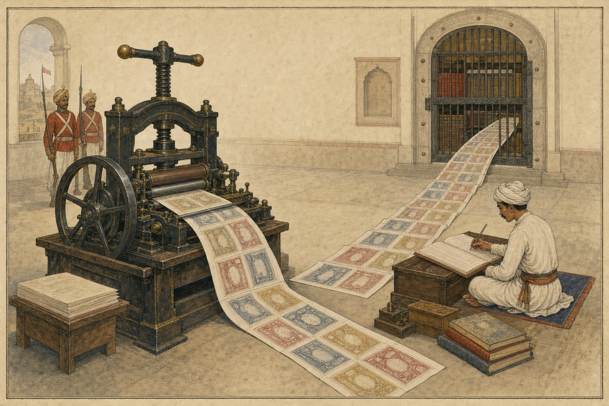
The same printed purchasing power, loose in a war economy with no distribution controls, met Bengal in 1943. The causes stacked: Burma's fall cut rice imports; the October 1942 cyclone and crop fungus hit the winter harvest; Calcutta's war industries bid up food; and "denial" schemes — meant to deny a Japanese invasion resources — confiscated ~40,000 tons of coastal rice and tens of thousands of country boats, destroying the fishing and boating castes who would be among the first to die [research 05]. Rice quadrupled in a year. What did not happen is the indictment: famine was never formally declared, so the Famine Code never switched on. Madras, facing the same war, banned rice exports and made the rice trade a state monopoly — its prices flattened; paralysed Bengal did neither, and Bengal rice soon cost twice the Madras price Rothermund · ch. 9.3.
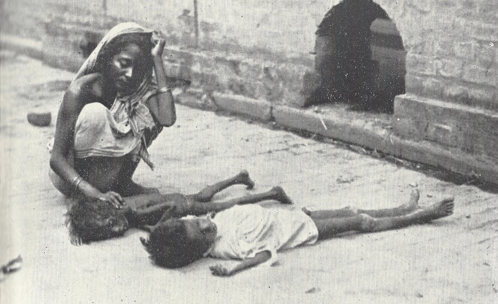
The tolls and the mechanism, stated carefully: the official Famine Inquiry Commission counted ~1.5 million dead; Amartya Sen's reconstruction ~3 million; the demographers' consensus sits at 2.1–3 million [FIC; Sen; Dyson-Maharatna]. Sen's revolutionary point — food availability had barely fallen; what collapsed was people's entitlement to it. Rothermund supplies the detective's clue: raw jute prices stayed low through the famine. Jute grows in rice fields — had growers actually been receiving the famine prices for rice, they would have switched crops. The high prices were being captured above the peasant: "the crisis was not a crisis of production and supply, but one of distribution or entitlement" Rothermund · ch. 9.3. London's role remains genuinely contested — Churchill's War Cabinet cut or refused grain-import requests in 1943 and Amery's diaries record the contempt, while counter-scholarship stresses the Indian Ocean shipping crisis and the ~1 million tons that did arrive from August 1943; the shared verdict is that Bengal ranked low among London's war priorities [Mukerjee vs Roy, Ó Gráda].
Out of the catastrophe, the state grew the organs it would keep: by early 1947 rationing covered 900 towns and some 152 million people — "without these preconditions," Rothermund notes, "all concepts of economic planning would have remained mere pipedreams" Rothermund · ch. 9.3. And in January 1944, with the Congress leadership in prison, eight industrialists — Tata, Birla, Thakurdas, Shri Ram, Lalbhai, Dalal, Shroff, Matthai — published the Bombay Plan: Rs 10,000 crore over fifteen years to double per-capita income, allocating industry 45 to agriculture's 12 — the farm treated, in the book's words, as "more of a liability than an asset" Rothermund · ch. 9.4. Independent India's planning would follow that trend line almost exactly.
What went where: fibre without mills, headworks without canals, refugees without land.
Partition displaced 14.5–18 million people — the largest forced migration in history [research 07] — and performed, almost as an afterthought, radical surgery on an economic body a century in the making. Go back to the canal-colonies map in Chapter 6: nearly all of it lies west of the Radcliffe Line. Pakistan took the subcontinent's irrigated wheat-and-cotton surplus, and East Bengal took roughly four-fifths of the jute land; India kept every jute mill in the Calcutta belt and the cotton mills of Bombay and Ahmedabad. Fibre without factories on one side, factories without fibre on the other — by December 1947 Pakistan was already taxing raw-jute exports, and both countries were racing to build what the other had.
Water was cut with the same knife. The Madhopur and Ferozepur headworks landed in India; the canals they fed ran into Pakistan. On 1 April 1948, East Punjab briefly closed the sluices at sowing time — one shut gate compressing twelve future years of diplomacy into a single dry canal, resolved only by the World Bank-mediated Indus Waters Treaty of 1960 (eastern rivers to India, western to Pakistan) [research 07; World Bank].
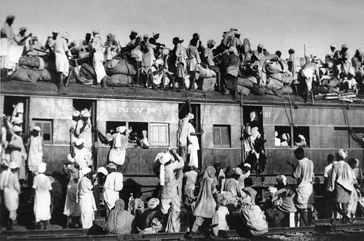
The arithmetic of resettlement was brutal: refugees claimed ~2.7 million hectares abandoned in the west against ~1.9 million actually available in the east. A civil servant, Tarlok Singh, squared it with two inventions: the standard acre (a unit of land yielding 10-11 maunds of rice, making a parched Hissar acre commensurable with a canal-colony acre) and graded cuts (allotments trimmed progressively — 25% on the first ten standard acres, steeper above). Some 250,000 allotments were made by November 1949 [Guha] — and, as a by-product, resettlement consolidated East Punjab's fragmented holdings into compact farms. File that detail: when the dwarf wheat arrives in 1966, it lands first on exactly these consolidated, canal-and-tubewell-ready fields.
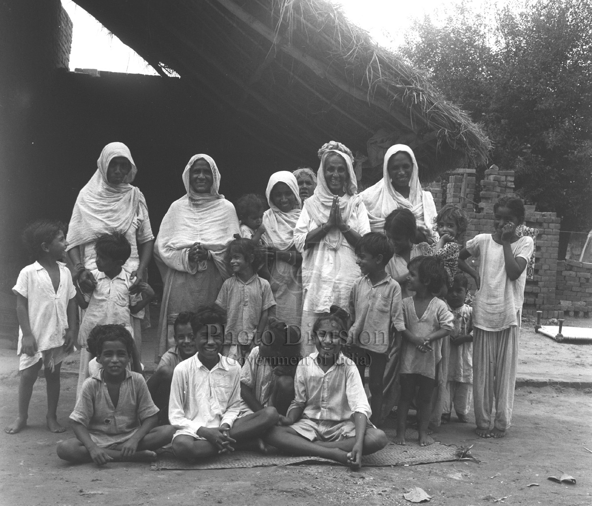
And the food ledger at midnight, 15 August 1947: India kept ~82% of the people and ~75% of the wheat area, but lost the irrigated west. Rationing already covered 771 towns; by 1951 the new republic needed ~6 million tonnes of imported grain and an emergency wheat loan from President Truman. The "ship-to-mouth" decades begin here — as does the east-west divergence Rothermund traces through the refugees themselves: Calcutta received East Bengal's rentier gentry, who "had only learned to live on the rents paid by their tenants," while Bombay received Sindhi merchants who built businesses Rothermund · ch. 14.2.
The republic promises land to the tiller and steel to the nation. It delivers dams, plans and factories — but leaves the land's paperwork rotten, its yields flat, and its dinner dependent on American wheat ships. Two failed monsoons will end the era.
Zamindari abolished, tenancy driven underground, ceilings full of holes, Bhoodan's long walk.
Land was a state subject, and the state assemblies that had to legislate reform were dominated by the very landowners reform would expropriate — the central tension of the whole program [Appu]. Even so, the first act succeeded. Zamindari abolition (state acts, 1948-55, covering ~40% of the country) ended the intermediary class the Permanent Settlement had created: some 20 million superior tenants came into direct relation with the state, with zamindars paid ~Rs 670-680 crore in graded compensation. It rewrote the Constitution along the way — when Bihar's act fell in court, the First Amendment (1951) invented the Ninth Schedule to shield land laws from judicial review. But note who won: not the landless. Ex-zamindars evicted tenants-at-will to resume their best acres as "home farms," share-croppers were relabelled "partners" whenever inspectors called Rothermund · ch. 10.1, and the ex-landlords merged into a rich peasantry that would block everything that came after.
The rest of the agenda died of paperwork and politics. Tenancy reform perversely drove tenancy underground: "resumption for personal cultivation" plus coerced "voluntary surrenders" produced mass evictions, leases went oral, and recorded tenancy collapsed — Daniel Thorner named the result agriculture's "built-in depressor" [Thorner]. Ceilings — 20-30 "standard acres" per person, with orchard and trust exemptions — were dissolved pre-emptively by benami transfers and backdated family partitions; across all rounds, under 2% of operated area was ever redistributed [Appu]. Underneath it all, the instrument any reform needed had quietly died: land revenue, unrevised since the Depression, had eroded until "in most districts the cost of its collection was higher than the amount collected" — and with it rotted the village land records; without a record of rights, most land reform "remained wishful thinking" Rothermund · ch. 10.1.
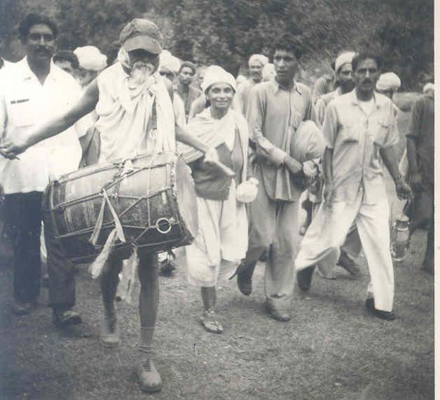
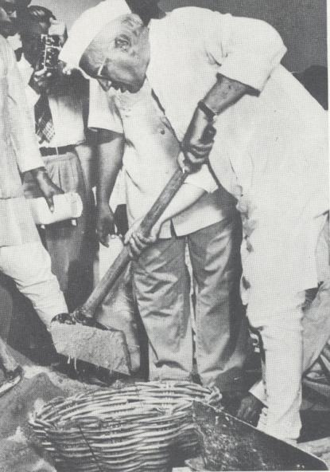
What actually worked? Two things, mostly. Chakbandi — consolidation of scattered fragments into compact holdings — succeeded wherever administration was strong: Punjab (essentially complete by the mid-1960s), Haryana, western UP; it barely happened in the east. And, decades later, the exceptions that proved the rule: Kerala's tenancy reforms and West Bengal's Operation Barga (1978), which registered ~1.4-1.5 million share-croppers and gave their heirs security. The econometric verdict on the whole era is precise: across a 16-state panel, land-reform legislation did reduce rural poverty — but the effect came from tenancy reform and intermediary abolition; ceilings and consolidation show no measurable poverty effect at all [Besley-Burgess, QJE 2000]. Land to the tiller, as legislated, was mostly land to the upper tenant — and the map of where reform worked (and where records were clean) will reappear, chapter after chapter, as the map of everything else.
Five-year plans, PL-480, ship-to-mouth — and the drought that ended an era.
The numbers of the planning era tell its story with brutal economy. Across the first three Five-Year Plans (1951-66), public investment totalled some 163 billion rupees — of which agriculture received 19 Rothermund · ch. 10.2. The Mahalanobis strategy aimed the nation's savings at steel, machines and dams; food was to stay cheap so industrial wages could stay low, which meant the farm's terms of trade were deliberately tilted against it. And since the government's coalition was urban consumers plus rich peasants, it could neither tax the farm nor let food prices rise — "its neglect by the planners was practically preordained" Rothermund · ch. 10.2. Agriculture grew anyway — but horizontally: cultivated area up 15% by 1964, yields barely moving, the new acres ploughed out of fallow, pasture and forest. "Whereas industrialisation had been pushed ahead vertically, agriculture had been extended horizontally" Rothermund · ch. 10.4.
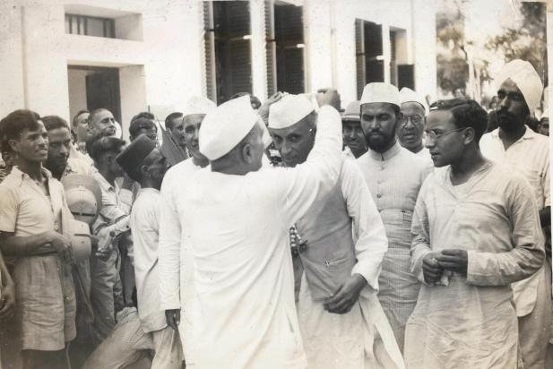
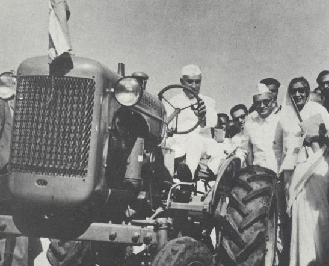
The gap between plan and plate was filled by America. Under PL-480, wheat came payable in rupees — accepted "with a sigh of relief" when sterling reserves ran dry in 1956 — and kept coming: 54 million tons over fifteen years Rothermund · ch. 10.5. Rothermund airs the uncomfortable hindsight: without that cushion, food prices would have risen earlier, and the correction forced on Indian agriculture in 1966 might have come a decade earlier. Meanwhile foreign aid swelled to ~30% of public investment, and the home market betrayed the model's flaw — machine-tool output nearly quadrupled in the early sixties while bicycle output crept from 1 to 1.4 million: an investment-goods sector racing ahead of a population too poor to buy what growth was supposed to bring Rothermund · ch. 10.3.
Then the sky called the bet. The kharif failed in 1965 and 1966: foodgrain output crashed ~19%, from 89.4 to 72.3 million tonnes [DES]; Bihar in 1966-67 was the sharpest emergency. Cereal imports peaked at ~10.3 million tonnes in 1966 — roughly three grain ships docking every day, national stocks at moments down to about a week: the years India lived, in the phrase of the time, ship-to-mouth [research 09]. And the ships came with a hand on the tap: President Johnson's "short-tether" policy released PL-480 month by month, each shipment personally approved, explicitly leveraging food to force Indian agricultural reform and mute criticism of Vietnam — documented in the declassified record, including the then-secret Rome agreement of November 1965, where C. Subramaniam and Orville Freeman traded aid for fertilizer expansion and a 32-million-acre high-yield crash programme [FRUS 1964-68 vol. XXV; Ahlberg]. Add the forced devaluation of June 1966 — the rupee from 4.76 to 7.50 to the dollar, "exports did not grow, but imports became more expensive" Rothermund · ch. 11.4 — and the humiliation was complete. Nehru had died in May 1964, a year before the drought "ruined all the plans"; the correction his successors chose is the next chapter.
A seed, a price and a bureaucracy end the food crisis; a cooperative ends the milk racket; and a decade of borrowed growth ends at the pawnbroker's. The republic wins its war on famine — and walks into a new kind of crisis.
Dwarf wheat, the MSP-FCI machine, and the harvest that ended ship-to-mouth.
The seed came first, and it travelled far: dwarfing genes from Japan's Norin 10 wheat, crossed in Washington State, perfected in Mexico by Norman Borlaug into short, stiff-strawed varieties that turned fertiliser into grain instead of collapsing under the weight — and, being insensitive to day-length, grew anywhere [research 09]. Borlaug reached Delhi in March 1963 at the Rockefeller Foundation's urging; trial samples went to IARI that October. The scientist who drove the trials was M.S. Swaminathan — then head of IARI's Botany Division — who would later breed the amber-grained selections Kalyan Sona and Sonalika, and the Sharbati Sonora mutant that solved the one problem Indian consumers had with Mexican wheat: it was red. In 1966, with the drought at its worst, India bought ~18,000 tonnes of Mexican seed — Borlaug himself called it the largest seed purchase in history — and sowed it on 240,000 hectares [Borlaug, Nobel lecture 1970].
The price came second, and it took more courage. Food minister C. Subramaniam fought his own cabinet for a ~15% procurement-price rise announced before sowing — and, to convince sceptical MPs, had the lawn of his official Delhi residence dug up and planted with the new wheat [research 09]. The bureaucracy came third: the Agricultural Prices Commission (January 1965; today's CACP) to recommend a minimum support price before each season — the first wheat MSP, 1966-67, was Rs 54 a quintal — and the Food Corporation of India (14 January 1965) to buy, open-endedly, everything farmers offered at that price, hold the buffer stock, and feed the PDS ration shops [research 09]. Seed, price, procurement: the tripod still standing under Indian agriculture today, sixty years on.
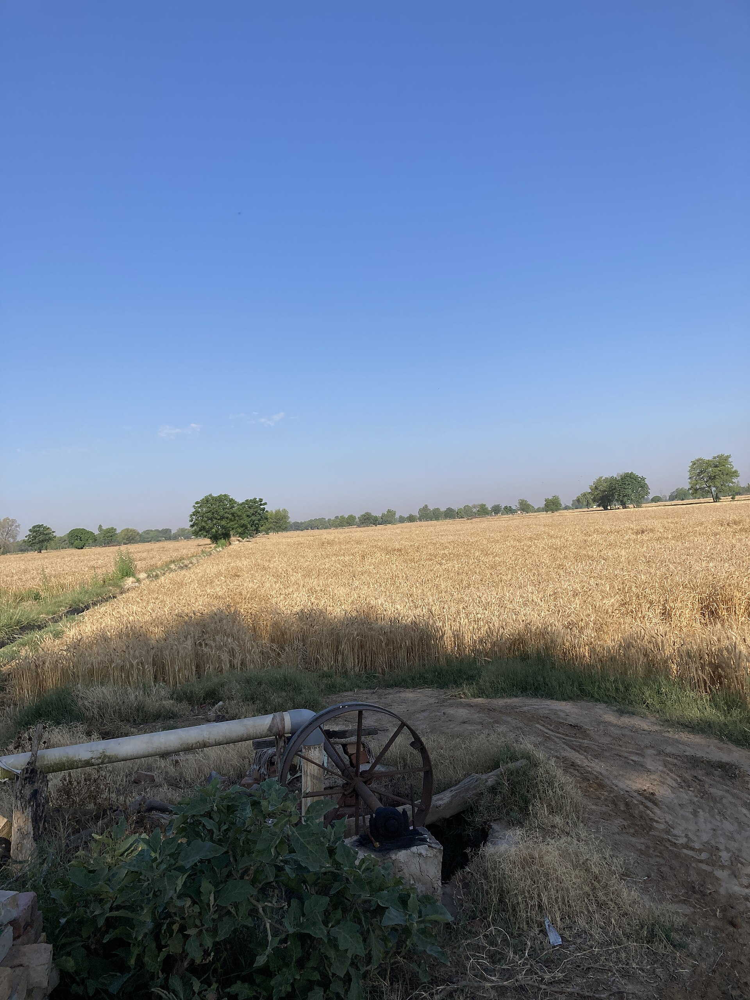
The jump was violent: wheat 11.4 million tonnes (1966-67) → 16.5 (1967-68) → 20.1 (1969-70) → 55.1 (1990-91) [USDA; DES]. India was self-sufficient by the mid-1970s; after the record 1975-76 harvest, food aid ended; there has been no famine since. The counterfactual has a price tag: economists estimate a ten-year delay in the Green Revolution would have cost the developing world ~17% of GDP per capita by 2010 [Gollin, JPE 2021]. But Rothermund's ledger keeps the other column with equal care. In its first five years it was "a wheat revolution" — wheat +60%, rice +8%, jowar, bajra, pulses and oilseeds flat Rothermund · ch. 11.2. It was geographically narrow: by 1991 Punjab and Haryana — 37 million people — produced 0.65 tonnes of wheat-and-rice per head per year; Andhra, Bihar and West Bengal — 220 million people — produced 0.15 Rothermund · ch. 11.2. It was nursed: procurement often above the Commission's recommendation, a fertiliser subsidy of 18 billion rupees by 1985 that no government dared touch until 1991. And it had a hidden nutritional bill: pulse availability halved, 65 to 31 grams a day, between 1960 and 1980 — protein fell during the miracle Rothermund · ch. 11.2.
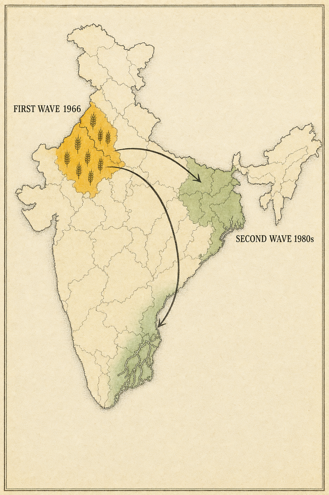
Anand, Amul, Operation Flood — and the allied revolutions in eggs, fish and fruit.
It began with milk poured on the roads. In 1946, Kaira district's dairy farmers supplied Bombay through one licensed monopoly buyer — Polson Dairy — at a fraction of the city price. On Sardar Patel's advice, they struck for fifteen days: milk ran in the gutters of Anand, Bombay went dry, and the farmers won the right to their own cooperative, registered on 14 December 1946 under Tribhuvandas Patel [NDDB]. Three years later a young mechanical engineer named Verghese Kurien, serving out a government-scholarship bond at Anand's sleepy creamery, was talked into staying to run the farmers' dairy. The pairing — an elected farmer chairman, a salaried professional manager — became the Anand pattern, the institutional DNA of everything that followed.
The technical breakthrough came in 1955, when Amul's chief engineer H.M. Dalaya achieved what settled international expertise said was impossible: the world's first commercial milk powder made from buffalo milk — the milk Indian farmers actually had. Nehru inaugurated the plant that October; the brand "Amul" went on tins in 1957. The mechanics that made villages loyal were brutally simple: milk poured twice daily at the village society, weighed and fat-tested in front of the seller, cash the same day — for a landless household with one buffalo, often the family's only daily income — with vets and artificial insemination delivered to the doorstep [research 10; NDDB].
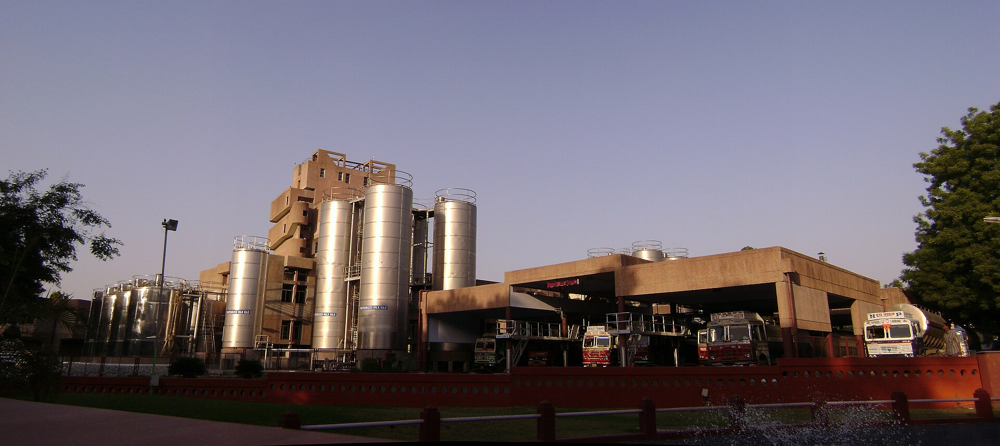
Then the jujitsu. Operation Flood (launched 13 January 1970, after Prime Minister Shastri had spent a night in an Anand village and made Kurien founder-chairman of the new National Dairy Development Board): Europe's mountain of surplus milk powder and butter oil, donated through the World Food Programme, was sold in India — priced never to undercut domestic milk — and the proceeds invested in farmer-owned milksheds and a National Milk Grid of rail and road tankers. The dumped surplus that might have destroyed Indian dairying paid to build it [NDDB]. The curve tells the rest: milk output had crawled from 17 to 21 million tonnes over 1950-70 — per-capita availability actually falling — then bent: 53.9 Mt (1990-91), 121.8 (2010-11), 239.3 Mt (2023-24), ~24-25% of world output, No. 1 since 1998; per-capita availability 471 g/day [BAHS 2024; NDDB]. Milk is today India's most valuable farm product — worth more than paddy and wheat combined — produced by ~17 million member families, mostly one-to-three-animal smallholders, about a third of the pourers women [PIB].
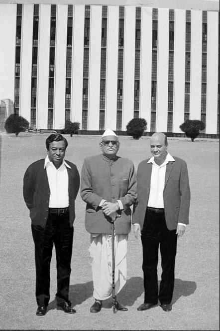
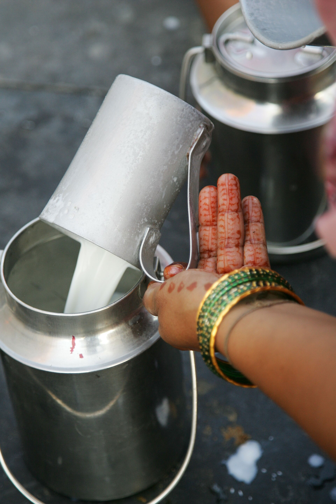
The story kept its honesty: boards have been politicised (Kurien himself was ousted from GCMMF in 2006); UP and Bihar, the biggest producers, remain largely informal; two-thirds of India's milk still moves through unorganised channels; and a litre of northwest milk drinks ~1,000 litres of increasingly scarce water [research 10]. And the culture followed the cooperative: Manthan (1976), Shyam Benegal's film of the Anand story, was financed by 500,000 Gujarat dairy farmers at Rs 2 each — India's first crowd-funded feature, screened village to village as Operation Flood's best recruiter, restored for Cannes in 2024. The allied revolutions get one line each, as they got one ministry each: eggs — 142.8 billion a year, world No. 2; the Blue Revolution — 18.4 Mt of fish, shrimp exports near $5 billion; and horticulture, which quietly overtook foodgrains in output around 2012 and now exceeds them in tonnage — the diet's long shift from calories to nutrition [PIB; research 10].
The 1980s boom, the 1990 unravelling, and the crisis that changed everything.
The 1980s were the decade the old jokes retired. Growth stepped up from ~3.5% to ~5.5%; industrial output doubled; tractors sold doubled from 71,000 to 143,000 a year Rothermund · ch. 12.1. Agriculture logged a quieter triumph that Rothermund, writing in 1991, singled out: decades of irrigation investment meant "emancipation from the vagaries of the monsoon was actually achieved in this way in the 1980s" — when the worst drought since 1965-66 struck in 1987, the buffer stocks absorbed it without famine, without panic, and almost without imports Rothermund · ch. 12.1. The machine built in 1965 had passed its first great stress test so quietly that almost nobody noticed. That silence — no relief camps, no ships, no headlines — was the Green Revolution's real monument.
But the boom's financing was a slow fuse. M1 rose 165% in six years; the Reserve Bank's credit to the government hit Rs 130 billion in 1989-90 — the central bank, in the book's dry phrase, "could only report on the defeat of its monetary policy" Rothermund · ch. 12.1. Rajiv Gandhi's 1985 liberalisation had diagnosed the licence raj honestly — industry "fossilised" behind protection — but Bofors, Punjab and Sri Lanka consumed the government. Then August 1990: Iraq invaded Kuwait, oil spiked, and ~150,000 Indian workers were evacuated home with their jobs and savings gone. The V.P. Singh government fell; a 1990 agricultural loan waiver "severely damaged the system of agricultural credit" — a precedent to remember in Chapter 21 Rothermund · ch. 12.3. NRI deposits turned to outflow; by March 1991 the trade deficit hit Rs 106 billion, no longer covered by invisibles — "India was on the verge of bankruptcy" Rothermund · ch. 12.3 — and reserves fell to roughly $1 billion: two weeks of imports [RBI].
The endgame ran fast and remade everything. In May 1991 the State Bank leased 20 tonnes of gold abroad; in July the RBI airlifted 46.91 tonnes to the Bank of England and Bank of Japan, raising ~$400 million against pledge [RBI History, vol. 4 — the airlift is not in Rothermund]. Rajiv Gandhi was assassinated mid-campaign on 21 May — the crisis bracketed by two Gandhi assassinations. The new minority government of Narasimha Rao — a veteran "who had wanted to retire" — and finance minister Manmohan Singh devalued the rupee 18-19% in two steps (1 and 3 July), cut subsidies (fertiliser up 30% — the first touch of the untouchable), abolished industrial licensing on 24 July, and replaced import controls with tradable Eximscrips — "a market mechanism rather than the old controls" Rothermund · ch. 12.4. Confidence returned at sprint speed: reserves went from Rs 25 billion (June 1991) to 95 billion (December) to ~125 billion by April 1992, when India told the IMF it no longer needed help. "India presented itself under new management and overcame the crisis very rapidly" Rothermund · ch. 12.4. What the new management did not reform — the farm — is the final part of this story.
Liberalisation remakes everything except the farm. Output leaves agriculture; the people do not. Records pile up alongside distress, the welfare state grows to world scale, and the century-old question changes shape: not "can India feed itself?" but "can India employ itself?"
The 1991 asymmetry, and the scissors that never closed.
The 1991 reforms had a shape, and the farm was outside it. Industry was delicensed, trade decanalised, finance opened — while agriculture kept the Essential Commodities Act of 1955, the state APMC monopolies, licensed traders, and the MSP-procurement-PDS complex, untouched. Scholars called it "reform by neglect" [Gulati]. The early spillovers were actually good — devaluation and cheaper industrial goods improved the farm's terms of trade, and agri-exports doubled by 1996-97 — but then the paths diverged: across the Ninth and Tenth Plans farm growth ran ~2.5% a year against overall growth of 6-8%, and for a decade after 1996, farm GDP grew slower than the rural population [Planning Commission; research 11].
| Year | Employment share | GDP/GVA share |
|---|---|---|
| 1951 | ~70% | ~55% |
| 1983 | 68.5% | ~37% |
| 1993-94 | 64.8% | ~30% |
| 2011-12 | ~49% | ~18.5% |
| 2023-24 | 46.1% | ~16% |
Sources: RBI Handbook; Census/NSS/PLFS; MoSPI. Definitions vary across series; the gap, not the decimals, is the story.
Rothermund, writing at the very hinge of 1991, had already diagnosed the trap with a productivity ledger: three-quarters of the workforce tied to a sector producing a third of the output, the industrial worker nearly eight times as productive as the peasant Rothermund · ch. 13.3. His explanation for why people stayed put inverted the textbook: "it is not the industrial sector, but the landowners who exploit this rural reserve army of labour" — cheap, abundant labour suits those who own land, and population growth "stabilises the existing social structure" rather than subverting it Rothermund · ch. 13.1. East Asia broke that trap by pulling farm labour into factories; India's manufacturing employment never left the 11-12% band, so those who did exit farming went to construction sites and informal services. One genuine milestone passed almost unnoticed: around 2004-05, at ~259 million, the absolute farm workforce peaked and began to fall for the first time in recorded Indian history [NSS].
Meanwhile the public money that did reach agriculture changed character: investment (canals, research, roads) fell from ~3.9% of farm GDP in the early 1980s to under 2% by 2000, while subsidies (fertiliser, power, water) climbed to 7-8% — and the fertiliser subsidy alone went from Rs 4,389 crore (1990-91) to Rs 76,603 crore (2008-09) [Gulati; IFPRI]. The canonical IFPRI finding — a rupee in research or rural roads returns several times a rupee in subsidy — was published, cited, and not acted upon. When the WTO era brought world prices into the village, the 1998-2004 global slump (cotton at a 30-year low, amplified by American and European subsidies) found Indian growers newly exposed: the first Situation Assessment Survey (2003) recorded 48.6% of farm households indebted — and 40% saying they would quit farming if they could [NSS SAS 2003].
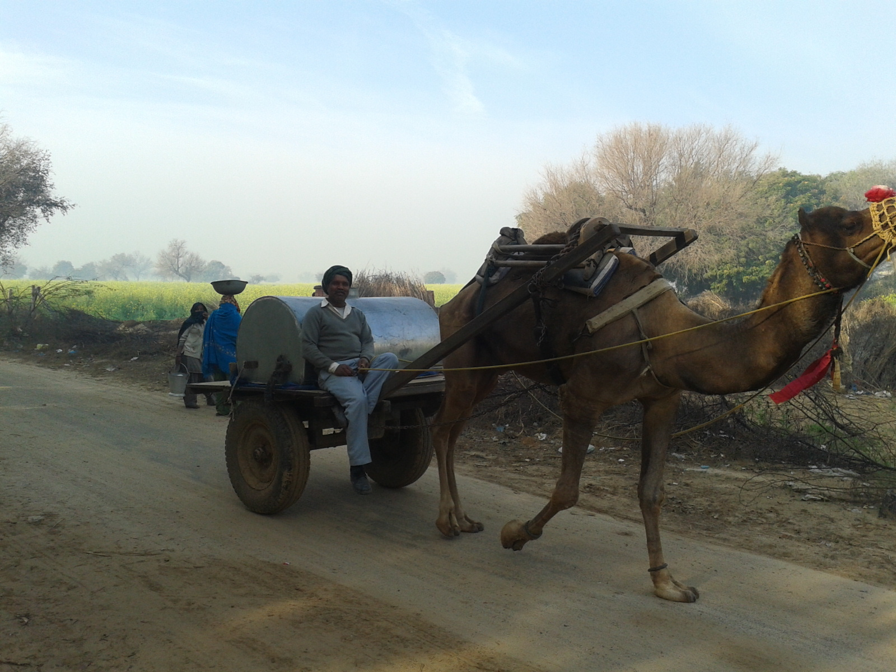
The tubewell republic: free power, falling aquifers, a million tractors, burning fields.
The great inversion of Indian irrigation happened off the plan documents. Canals — the state's pride from Cautley to Bhakra — watered ~40% of irrigated land in 1950-51; today they water under a quarter, while wells and tubewells water over 60% [LUS]. From fewer than a million wells in 1960, the countryside drilled its way to some 22 million groundwater schemes [Minor Irrigation Census] — making India the world's largest groundwater user at ~245 billion cubic metres a year, roughly a quarter of global extraction, more than the United States and China combined [CGWB; World Bank]. Rothermund saw it coming in 1991: publicly financed wells, he wrote, "could dwarf all achievements of the 'Green Revolution'" Rothermund · ch. 15.1.
The accelerant is the electricity bill that never comes. Punjab's farm power has been fully free since February 1997 — a subsidy that grew from Rs 604 crore to ~Rs 10,000 crore a year — and thirteen big states together now spend over Rs 1.3 lakh crore a year subsidising farm power [CEEW; research 14]. When pumping is free, the water table pays: NASA's GRACE satellites measured northwest India losing 17.7 km³ of groundwater a year through 2002-08 [Rodell, Nature 2009]; Punjab's official extraction stage is 163.76% — pumping five litres for every three the monsoon returns — with central districts falling a metre a year [CGWB 2024]. The absurdity has a number: ~5,337 litres of water grow one kilogram of Punjab rice — double Bengal's figure — and nearly all of it leaves the state as procured grain: virtual water, exported by rail from a drying aquifer, because MSP and free power say so [CACP; IndiaSpend].
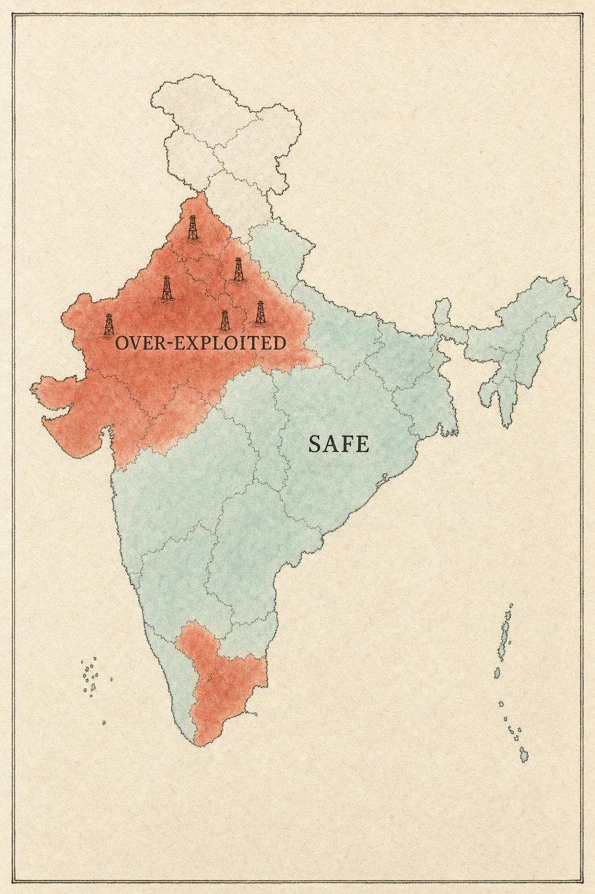
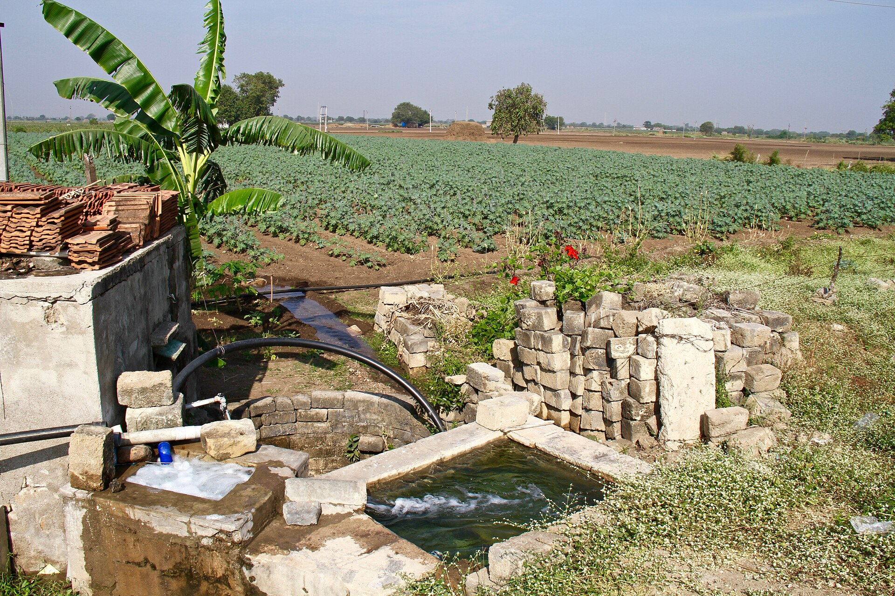
The machines completed their conquest in one generation. Draught animals supplied ~78% of farm power in 1960 and ~7% by 2013; India's tractor sales crossed one million in 2025 — roughly half the world market — with Mahindra the largest tractor maker on earth [TMA]. (Punjab, characteristically, over-bought: ~82 tractors per 1,000 hectares running 500-600 hours a year against an 800–1,000-hour efficiency benchmark.) Fertiliser went from 0.07 to ~140 kg per hectare, but cheapest-is-king urea skewed the nutrient ratio to ~11:4:1 against the ideal 4:2:1 [research 15]. Bt cotton — India's first and still only GM crop — was approved in March 2002 mainly because an unlicensed variety was already on ten thousand Gujarat acres; adoption passed 93%, the early gains were real, and then pink bollworm evolved around the trait while GM food crops stayed frozen in moratorium and litigation [ISAAA; research 15]. And each November the system's contradictions become visible from space: the 2009 groundwater acts delayed paddy transplanting to save water, compressing the paddy-wheat turnaround to two or three weeks — so ~23 million tonnes of stubble burn across ~2.8 million hectares, and Delhi tastes the water table in its lungs [research 14; NASA].
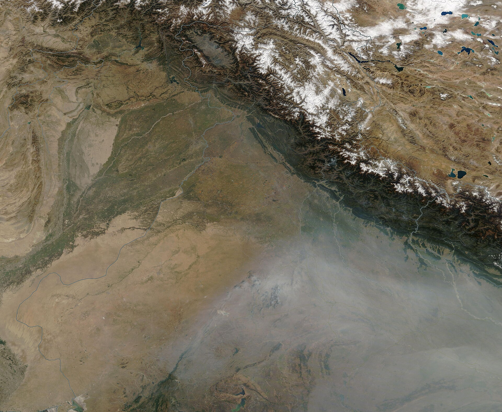
Suicides and shrinking farms; MGNREGA, PM-KISAN, NFSA — and the farm laws that met a year-long siege.
The hardest numbers first, with their caveats attached. Since the National Crime Records Bureau began counting in 1995, over 300,000 farmers have died by suicide — a sum of the NCRB's annual tables popularised by P. Sainath; in recent years the toll runs ~10,700-11,300 farmers and farm labourers annually — about one death every hour [NCRB ADSI]. The series has real problems — a 2014 definitional split, several states implausibly reporting zero — so treat it as a floor (whether farmers' suicide rate exceeds the general population's is separately contested). The geography is stubborn: Maharashtra, especially the Vidarbha-Marathwada cotton belts, accounts for ~38%; the causal cluster in the research is indebtedness (often informal), high-cost Bt cotton on unirrigated land, water failure, and catastrophic health costs [NCRB; Kennedy-King 2014; Sainath].
Beneath the tragedy, the arithmetic that produces it. The average farm household earns Rs 10,218 a month (SAS 2019), of which net crop income is Rs 3,798 — less than the Rs 4,063 the same household earns from wage labour: the median Indian "farmer" already earns more as a labourer than as a farmer [SAS 2019]. Half of farm households are in debt (average outstanding Rs 74,121, ~30% of it from non-institutional sources, a fifth of the total still the moneylender — Darling's chapter, still open); and the land itself keeps shrinking: 2.28 hectares average in 1970-71, 1.08 in 2015-16, the latest official count [AgCensus]. The welfare response is without precedent anywhere: MGNREGA (2005) guaranteeing 100 days of paid work — 5-7 crore households a year; the Rs 71,680-crore loan waiver of 2008 and a Rs 2.4-lakh-crore state wave after 2017 (with the RBI warning, as Rothermund had of 1990's waiver, that each round corrodes credit itself Rothermund · ch. 12.3); PM-KISAN (2019) wiring Rs 6,000 a year to ~11 crore families; and the NFSA (2013) making subsidised — since 2023, free — grain a legal right for 81.35 crore people [PIB]. The famine chapters of this site end in a state that gives away more grain than the Raj ever shipped.
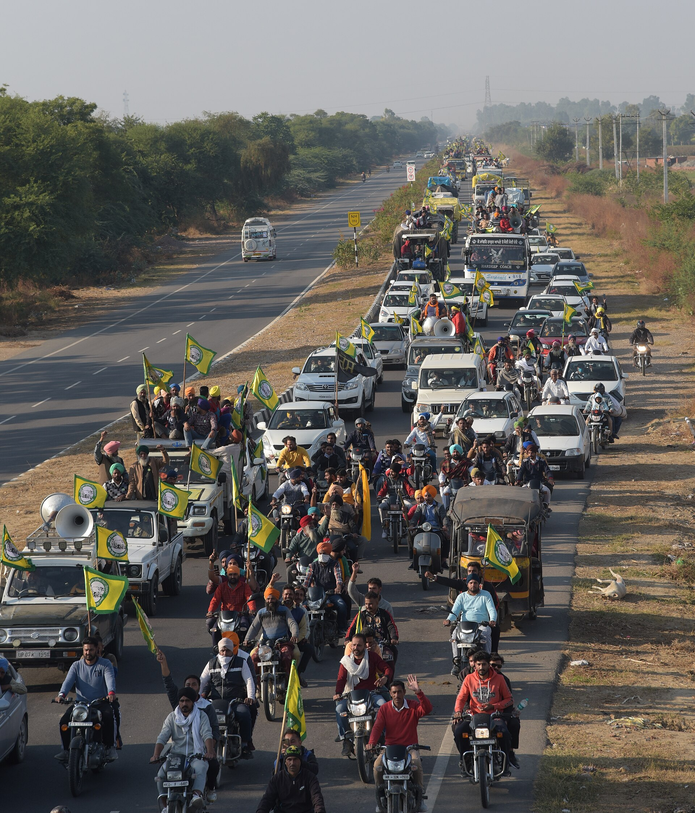
Into this landscape, in June 2020, came three ordinances: trade outside mandi yards made fee-free; a national contract-farming framework; stock limits eased to emergencies [PRS]. The case for them was decades old — the mandi monopoly ossified, Bihar had deregulated in 2006, with mixed results — and only ~6% of farm households actually sell to procurement (the Shanta Kumar figure, with its caveats: MSP anchors prices well beyond direct sellers, and in Punjab-Haryana selling to the state is near-universal) [Shanta Kumar HLC 2015]. The case against was federal, procedural and existential: marketing is a state subject, the ordinance route skipped consultation, the laws never mentioned MSP — and for Punjab's farmers, the mandi-arhatiya-MSP complex is not a market imperfection but the load-bearing wall of the household economy. The siege began 26 November 2020; the Supreme Court stayed the laws in January; Republic Day violence nearly broke the movement and a farm leader's tears revived it; and on Guru Nanak Jayanti, 19 November 2021, the Prime Minister announced repeal — the first withdrawal of major central legislation under mass pressure. The unions count 700+ dead over the year of protest; the Centre told Parliament it kept no record — both facts belong in the ledger [SKM; research 13]. The aftermath is stalemate: an MSP committee without a report, a second march halted at Shambhu in 2024, no legal MSP guarantee and no successor reform. The question the laws asked — who will build the farm's new marketplace, and with whose consent — stands exactly where it stood.
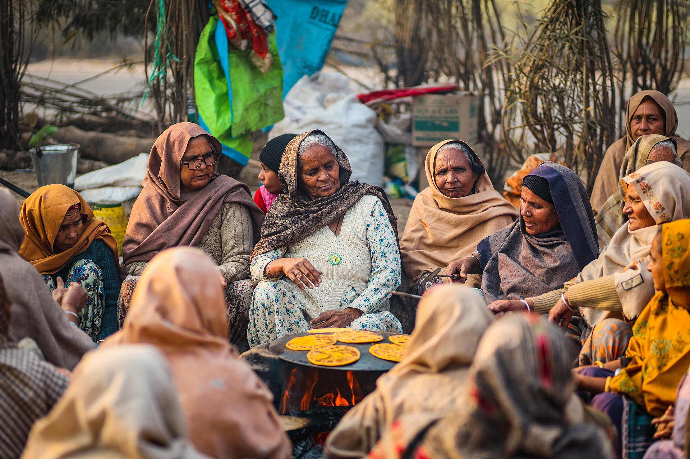
Records everywhere, incomes nowhere near — and the 200-million question.
Start with the triumphs, because they are real and hard-won. Foodgrains hit 357.7 million tonnes in 2024-25 — rice and wheat both records; horticulture, at ~369 million tonnes, now out-produces the grains; milk stands at 239 million tonnes; agricultural exports near $52 billion; and India ships ~40% of the world's traded rice — when it banned exports in 2023, prices moved from West Africa to the Gulf [DES; PIB; IFPRI]. Set this against Chapter 15's three grain ships a day, and the distance travelled in sixty years is astonishing.
Now the ledger's other page. Those records are produced by households averaging Rs 13,661 a month (NAFIS 2021-22) — only about a third of it from cultivation — on holdings the same survey puts at 0.74 hectares [NAFIS]. The pandemic even ran the great transformation backwards: agriculture's employment share rose from 42.5% (2018-19) to 46.5% (2020-21) as the cities' migrants walked home — the farm once again the employer of last resort — before easing to ~43-45% in the newest surveys [PLFS]. Nutrition tells the same both-columns story: record grain alongside 35.5% child stunting and 57% anaemia among women, because the binding constraint is what a healthy diet costs, not what the godowns hold [NFHS-5; FAO]. And the sky is changing sides again: March 2022 — the hottest on record — cut wheat yields ~4.5% and forced an export ban; ICAR's projections tabled in Parliament run to -20% for rainfed rice and -19% for wheat by 2050 [ICAR]. The millets year, the natural-farming mission, e-NAM's 1,656 digitised mandis, ten thousand FPOs — the new institutions are real, and every one of them is small against the scale of the two curves on the scissors chart.
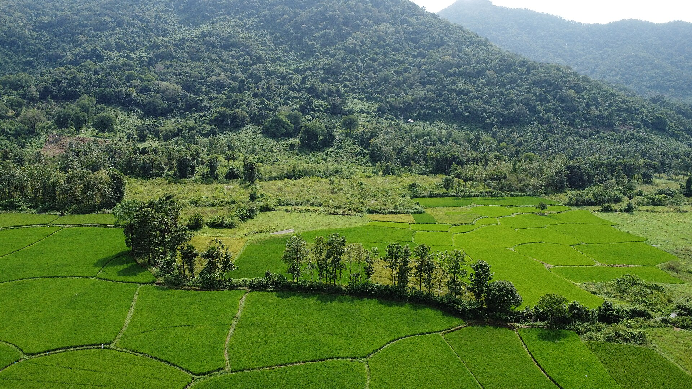
So the century-old question has changed shape. From Plassey to PL-480, the question was "can India feed itself?" — answered, definitively, by the tripod of 1965 and the cooperatives of Anand: yes. The question that remains is the one the scissors chart asks: output shares say India is a modern economy; employment shares say it is still agrarian. Reaching even East Asia's farm-employment share means 150-200 million workers finding productive non-farm work in the coming decades — the central economic challenge of the next generation [research 16; IMF]. The future of most Indian farmers, on the evidence of this whole ledger, lies outside farming; the future of Indian farming lies in fewer, better-earning farmers. Rothermund, closing his history at the 1991 hinge with Gandhi's swadeshi reinterpreted as "the self-reliance of creative individuals," gave his book a final sentence that will serve for this site as well: "It is time to unleash this potential" Rothermund · ch. 15.3.